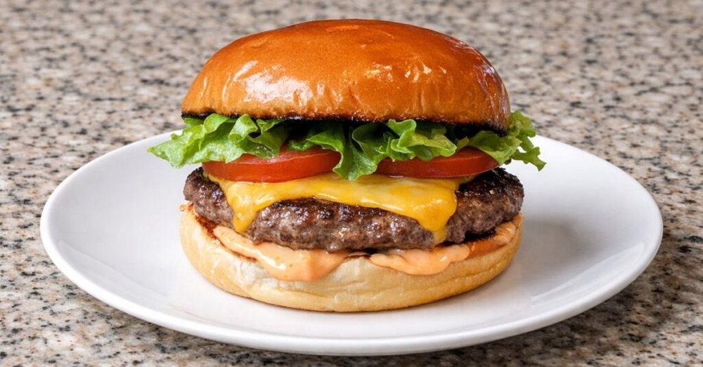

Carnes · Bovinos
Hambúrguer caseiro de patinho

Ingredientes
- 500 g de patinho moído
- Sal e pimenta
- 4 pães de hambúrguer
- 4 fatias de queijo
- Alface e tomate
- Mostarda e iogurte natural para o molho
Modo de preparo
- Divida a carne em quatro porções de 125 g.
- Modele os discos sem compactar demais.
- Separe com papel-manteiga e congele.
- No dia, cozinhe o hambúrguer até atingir 71 °C no centro.
- Monte com pão, queijo, vegetais e molho de iogurte com mostarda.
Observação
Para congelar a carne crua, mantenha-a sempre refrigerada durante o preparo.